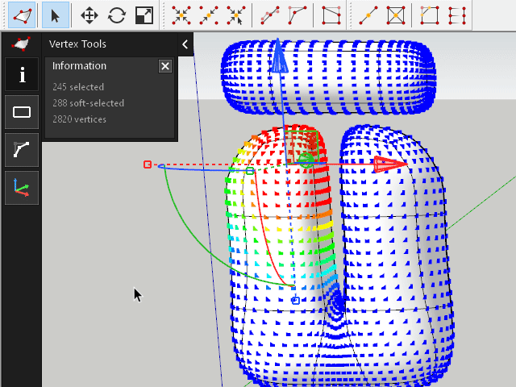
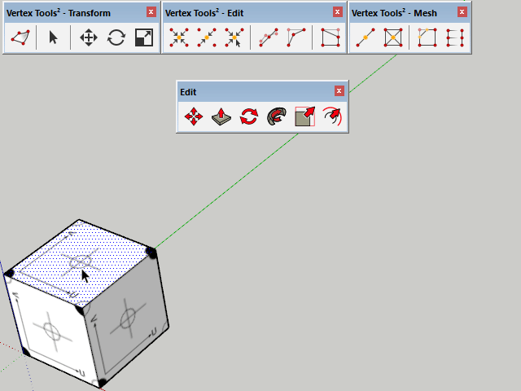
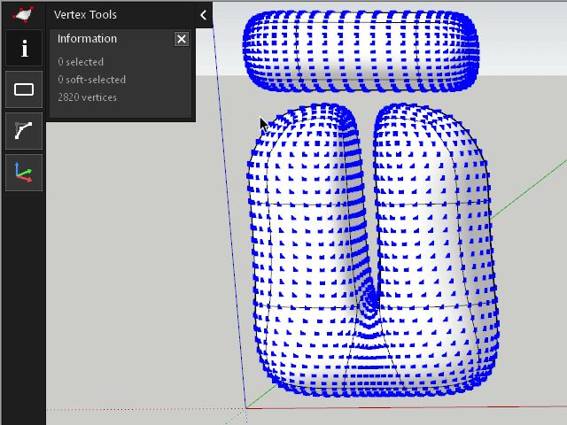
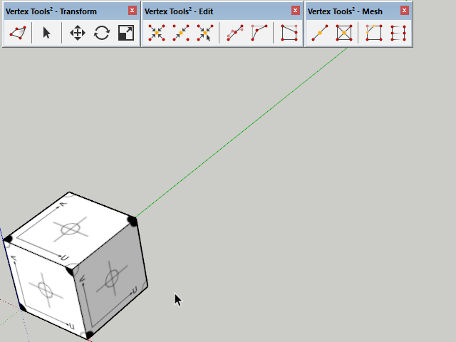
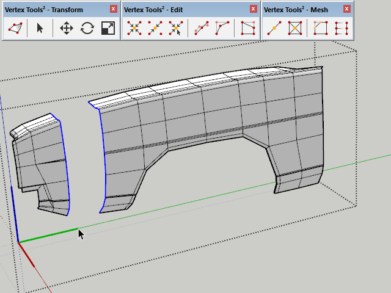
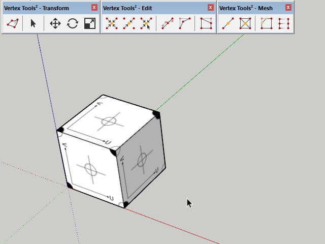
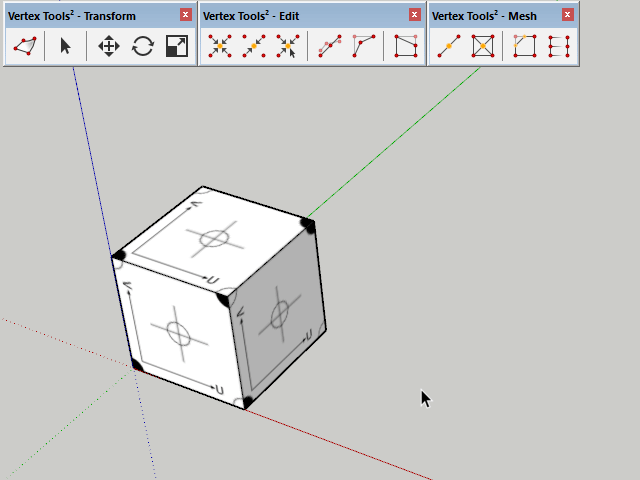

Vertex Editing
Toggle vertex editing mode by simply interacting with the various buttons or menus offered by Vertex Tools.
An on-screen UI will provide easy-access to key features and information.
By default a Manipulator Gizmo is available after selecting vertices for quick adjustments of the selected mesh.

Shortcut Integration
While in vertex mode, invoking the shortcuts for Select, Move, Rotate or Scale will activate the Vertex Tools version of these tools instead of the native tools.
This also works when using the menu and toolbar buttons for these tools. The integration is seamless.

More
Next
Selecting
Selecting is a central feature in Vertex Tools. Vertex selections offer a wide variety and great control over the selection by different types of selection modes; Rectangle, Circle, Polygon and Freehand.
Soft-selection is another key feature which allows for organic modelling, blending the transition of the mesh modifications.

More
Next
Modelling
As of version 2 of Vertex Tools there are now several modelling tools included allowing you to do more without exiting Vertex Mode.
Vertex Slide

Move vertices along their connected edges to move vertices along the surface of the geometry. Useful for fine-tuning edge loops.
Bridge

Select two sets of vertices, each with the same number of vertices and quad-faces will be generated between them.
Bevel

Bevel selected vertices by given distance or percentage.
Poke

Insert new vertices in the center of faces then "poke" it outwards or inwards.
More
Need assistance using Vertex Tools?
For general assistance on how to use Vertex Tools, please post your question at the SketchUp Forums.
Asking your question in the forums helps other people by making it readable to everyone. Additionally you will benefit from the collective knowledge of the community and most likely get a faster response.
Problems with licenses, purchases or bugs?
Enquires that doesn't fall into the above category can be submitted via the contact form.